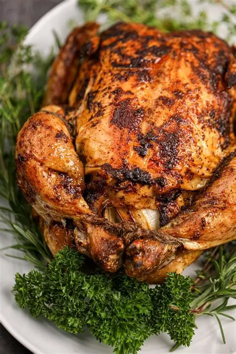
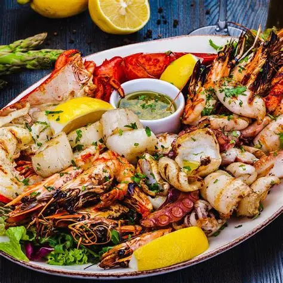
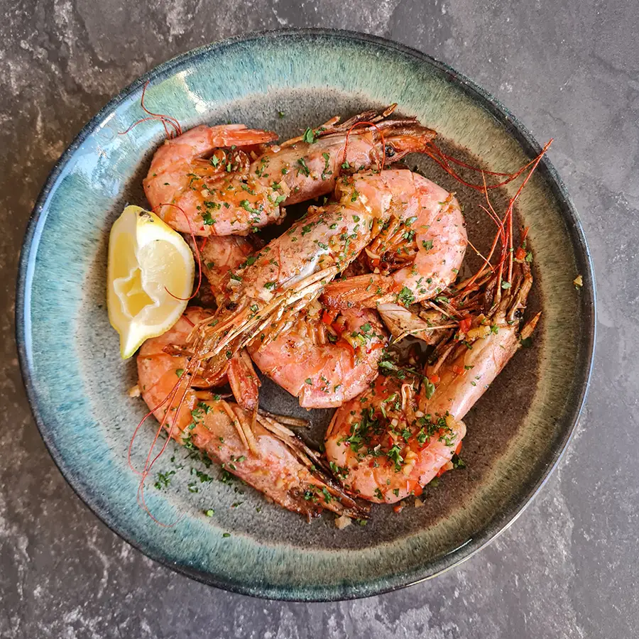
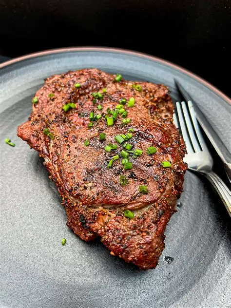

Whole Baby Chicken
R199
Authentic Portuguese cuisine in Durban North, hosted by Julio, whose restaurant career began in Durban in 1990.

Julio’s Casa is the very last restaurant in Julio’s long career, and he is your host. The menu runs from prawns, calamari and seafood platters to whole baby chicken and Portuguese steak, with plant-based dishes and a kiddies menu for the rest of the table.
We hope you feel at home here.
In April 1990 Julio decided to leave his professional music career to pursue his ambition of owning a Portuguese Restaurant. On the 12th of April he set aside his microphone and his drumsticks, put on his chef uniform, and opened “Cabanas Portuguese Restaurant” in the southern suburbs of Durban. Six years later he decided to move on and he sold it.
After a short break he started a new venture in North Beach named “Neo Café” which became an instant hit! It was followed by “Julio’s in Davenport Road” with similar success and was eventually sold on to one of his trusted waitrons. He then decided to widen his horizon and set up a restaurant in his homeland, Portugal.
However, Africa and its friendly people were never far from his mind and in July 2010 he returned and established “Julio’s on Ballito”. But Ballito was not quite home, so in October 2013 he sold up and returned to Durban with “Julio’s on the Bay”. In 2015, he opened “Julio’s Umhlanga” running two restaurants simultaneously for the first time, eventually selling “Julio’s Umhlanga” in April 2017.
In November 2017 with great excitement he purchased “Neo Café”, the brand he started more than 15 years ago in Sol Harris Crescent to open his final restaurant, “Julio’s Cabana”, named after his very first restaurant in 1990. He ran “Julio’s on the Bay” and “Julio’s Cabana” simultaneously.
Having sold both just before lockdown and after taking a break for 15 months, Julio missed the trade and took over the kitchen at the Umhlanga Ski Boat Club opening “Julio’s on the Ridge”. Coming full circle, Julio is now ending off his successful career with his very last restaurant, “Julio’s Casa”. We hope you feel at home here with Julio as your host.
Enjoy your experience at Julio’s.

R199

R219 for one · R449 for two

8 for R229 · 12 for R420

R209